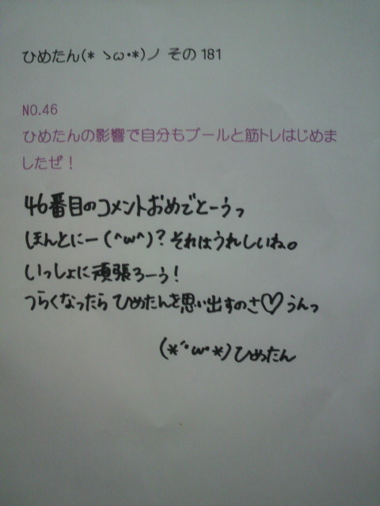

| 2012/07 17 Tue | ひめたん(* ゝω・*)ノ その182 |
おまつりー！

今年初のお祭り参加よ＼(^O^)／
ゆーわけでままに浴衣着せてもらたー
お友達とかメンバーさんとか、誰か知り合いに会わないかなーって
ずっときょろきょろしよったけど、結局誰にも会わんかった(´・ω・`)
東京って、広いんだね。
それでいっこ思ったのが、東京で
「広島風お好み焼き屋さん」の屋台をいっぱいみたんだけど、
広島のお祭りの屋台には「広島風お好み焼き屋さん」ないんだよー。
普段からいっぱい食べてるからなのか、
屋台のすぐそばにお好み焼き屋さんがいっぱいあるからなのか、
何でかよーわからんけどっ
 ちなみに今月の１６日が誕生日だからよかったら祝ってください( ´ ▽ ` )ノ
ちなみに今月の１６日が誕生日だからよかったら祝ってください( ´ ▽ ` )ノ
お誕生日おめでとーう☆
素敵ないちねんになりますようにっ。
これからもよろしくねーいろいろ頑張りましょしょ。
 あさって高校野球最後の大会なんだ(^^)
あさって高校野球最後の大会なんだ(^^)
応援メッセージくれたら嬉しいな♪
高校野球！
いーねなんか素敵だね。
ひめたんと同じ高校生さんが活躍してるってこと考えたら
応援したくなるね(*^^*)
暑いけど気をつけてね！無理はしちゃだめよっ
夏休みに学校の友達と遊ぶ約束してますか？
「遊ぼうねーっ」てのはいろんな子と言ってるんだけど
乃木坂のスケジュールがふわっとしてて、あんま具体的な約束はできないの。
あーでも！
広島から何人かお泊まりにきてくれるって∩^ω^∩
確かひめたんは走ったり運動がダメみたいですが
何故バスケ同好会入ってたんですか？
スポーツできる子になりたかったの。
だからとりあえずバスケやってみたんだけれども
結局、もともと運動できる子になんて当然勝てなくてー...
そん時通ってたダンススクールとの両立で悩んだ時に、ダンスをとったとさ。
ひめたんは英会話はできる？
できません(´・ω・`)
ＯＣゆーて、一時間英語しか使えませんみたいな授業があるんだけど
英語わっかんないからずっと黙ってる。死んじゃうー。
ひめたんビーム！は
１ 見つめるver
２ 見つめる＋手が加わるver
３ 見つめる＋手が加わる＋ウインクver
他にもある？
この前の大阪全握で新技を身につけました。
なんだけど、言葉で説明するのは難しいから手っ取り早い方法をご提案。
直接浴びにきてください(^ω^)
ひめたんに推し変しようと思うんだけどひめたんは推しても大丈夫？
安心安全？
かもーんぬ(^O^)
ひめたんは大丈夫。安全安心よー何がだろう(わら)
嬉しいよーありがとう///
阿部真央さんというアーティストなんですがご存知でしょうか？
あーっ
お友達があべまさん大好きで、「聴いてみ(^^)」って勧めてくれた！
けど聴いてなーい←
こりゃ聴くしかっ
ひめたんの広島時代や、今の時代で、フルーツバスケットって、
やったことあるのかな？知ってるのかな？
知っとるよ。やったことあるよー。
小学生ん時の学期末のお楽しみ会の鉄板出し物ネタだったなー懐かしいなー。
日芽香はYシャツの袖を捲ってる人捲ってない人どっちがいいー??
ひめたん的にはまくっててほしいかな(*^^*)
腕好きなの。男女問わず。
みんな腕まくるしかーあ
私は赤ぶちメガネなんだけど、赤ぶちはどうかな？？＞＜
ひめたんの周りは赤ぶち率高いよ！
赤ぶちはみんながみんな似合うわけじゃないから
そんな中で似合う人って素敵だと思う(*^^*)
バラードの曲と言ったら竹内まりやさんが好きなんだけど、
ひめたんは竹内まりやさんの曲は好き？
「元気をだして」
...しかわからんけど、素敵な曲だーよね(*^^*)
もっといろいろ聴いてみよかな←
 車の運転してみたいと思う？
車の運転してみたいと思う？
ピンクの軽にのるってずっと決めてたんだけど
ここに来て「いや車いらないんじゃね？」って思ったりする...
 俺夏休みの間、カナダにホームステイしに行くんだよ♪(*^^*)
俺夏休みの間、カナダにホームステイしに行くんだよ♪(*^^*)
応援してね♪(>_<)
ホームステイ！
かっくいーいっ
英語話せるのねーいいな憧れるなー///
日本が恋しくなったら、乃木坂さんのブログとかみて元気だしてね(ノ_;`)

いま見たら143コメントあってびっくりーっ
ありがとうございます///
明日になって146を越えてたら、次回画像載せるねっ
(*´・ω・*)ひめたん
コメント(147)
2012/07/17 10:54